低成本搭建个人博客
# 前言
搭建个人博客的方式有很多种，网上也有很多不同框架的教程，教程也都比较详细，但在搭建过程中，发现还是需要参考很多文章以满足不同的功能需求，并且在评论区看到大家都在问，能否贴源码，可能各位博主也都是想分步骤教学，但在读者看来每个都是片段，有种身在此山中，云深不知处的感觉，所以的教程从【配置对象】的角度去把每个对象的配置都贴出来。
本教程搭建的博客所用的资源完全免费。
# 技术栈
- vue/vuepress
- node/npm
- shell
- github
- aliyun dns
# 整体思路
一般来说，服务都需要部署在服务器上，如果是云上则需要购买LB、云主机、云数据库等，又会涉及到CI/CD等，这样更像是一个完整的服务，可以更多的定制一些想要的功能，不过本次我们的教程是一个轻量级的方案，前端使用vuepress框架，编译成静态文件后通过github pages发布，完全不需要后端，博客的样式、一些功能也通过前端的插件完成，也不需要自己写代码。
# 博客搭建
先看前端代码核心功能最终的目录结构
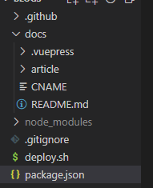
重要的几个目录/文件
- docs是主目录，存放文章，配置，图片，首页
- README.md 博客首页配置,会编译为index.html
- article是博客文章存放目录(article非固定名称可自定义)
- .vuepress是博客全部配置项
- config.js 博客基本设置
- public 资源目录(图片、音视频、文件等),为/目录
- style css配置(可选)
- CNAME是域名301的配置文件
- deploy.sh 是编译、部署脚本，完成CI/CD的工作
- package.json node项目配置文件，配置编译命令
也就是说，有了上面几个目录就能够启动博客了，接下来会着重讲这几个目录/文件的作用及配置。
# 👉1. 基本环境😊
在个人代码目录下执行以下命令，windows用户下载git后，右键可使用git bash 执行命令
# 创建代码目录
mkdir blogscode
cd blogscode
# 配置node环境及框架
npm init -y
npm install -D vuepress
2
3
4
5
6
编辑package.json中的scripts
"scripts": {
"test": "echo \"Error: no test specified\" && exit 1",
"docs:dev": "vuepress dev docs",
"docs:build": "vuepress build docs",
},
2
3
4
5
至此，我们完成了第一个重要的配置文件package.json的配置。
# 👉2. 配置博客布局
目录文件介绍
- doc/.vuepress/config.js 博客配置文件，布局、插件
- doc/.vuepress/public 博客图片根目录
- doc/.vuepress/dist 编译成功后的静态文件目录
mkdir -p docs/.vuepress
#当前目录：blogscode
# 建议使用cnpm
2
3
2.1 安装主题及插件
本次安装的主题是：vuepress-theme-reco
npm install vuepress-theme-reco --save-dev樱花效果插件
npm install vuepress-plugin-sakura -D鼠标点击效果
npm install vuepress-plugin-cursor-effects -D回到顶部插件(按需)
npm i vuepress-plugin-go-top -D为博客文章自动随机添加名人名言(按需)
npm i vuepress-plugin-boxx -D找一个想添加的问题空白处添加
<Boxx/>,使用参考 (opens new window)看板娘(按需)
npm i @vuepress-reco/vuepress-plugin-kan-ban-niang -D添加copy著作权
npm i copyright -D图片放大
npm install vuepress-plugin-dynamic-title --save复制代码块
npm i @xiaopanda/vuepress-plugin-code-copy -D 音乐播放器
npm install @vuepress-reco/vuepress-plugin-bgm-player -D全文搜索，默认只能搜索h2 h3及title
npm install vuepress-plugin-fulltext-search --saveLast-update-time 主题默认集成
2.2 布局配置
创建vuepress配置文件,对主题、插件以及博客布局进行配置
# 进入配置文件目录
cd docs/.vuepress
# 编辑配置文件
vim config.js
#直接看一个完整的配置文件更不容易遗漏
module.exports = {
base: "/blogs/", //用于存放编译后静态文件的仓库，配置pages使用
title: "子车轻罗的博客", // 标题随便定义
description: "龙蛇之变 木雁之间", // 描述随便定义
theme: "vuepress-theme-reco", // 按照自己安装的主题写，也可以安装其他主题
locales: {
"/": {
lang: "zh-CN",
}, // 日期格式：2023/1/1
},
themeConfig: {
author: "子车轻罗", // 全局
logo: "/dog.jpg", // 图片根路径在docs/.vuepress/public下
authorAvatar: "/dog.jpg", // 头像
type: "blog",
// nav 导航栏设置
nav: [
{ text: "首页", link: "/" },
{
text: "子车轻罗 的博客", // 跳转的友情链接
items: [
{ text: "掘金", link: "https://juejin.cn/" },
{ text: "Github", link: "https://github.com/" },
],
},
// { text: "TimeLine", link: "/timeline/", icon: "reco-date" }, // 导航栏右侧显示文章发布时间，按需
],
subSidebar: "auto", //在所有页面中启用自动生成子侧边栏，原 sidebar 仍然兼容，主要作用是右侧文章标题展示
// sidebar 左侧文章目录，
sidebar: {
"/article/other/": ["vpn", "blog",],
// {
// title: 'Group 1', // 必要的
// path: '/foo/', // 可选的, 标题的跳转链接，应为绝对路径且必须存在
// collapsable: false, // 可选的, 默认值是 true,
// sidebarDepth: 1, // 可选的, 默认值是 1
// children: [
// '/'
// ]
// },
// {
// title: 'Group 2',
// children: [ /* ... */ ],
// initialOpenGroupIndex: -1 // 可选的, 默认值是 0
// }
},
// 博客设置,默认即可
blogConfig: {
category: {
location: 2, // 在导航栏菜单中所占的位置，默认2
text: "分类", // 默认文案 “分类”
},
tag: {
location: 4, // 在导航栏菜单中所占的位置，默认4
text: "Tag", // 默认文案 “标签”
},
},
// 博客评论区,这个插件主题默认存在,需要配置github，下面github配置具体讲怎么配置。
vssueConfig: {
platform: "github",
owner: "zicheqingluo",
repo: "blogs",
clientId: "",
clientSecret: "",
autoCreateIssu: true,
},
},
// 插件配置
plugins: [
[
"sakura", // 樱花特效插件，配置默认即可
{
num: 20, // 默认数量
show: true, // 是否显示
zIndex: -1, // 层级
img: {
replace: false, // false 默认图 true 换图 需要填写httpUrl地址
},
},
],
[
"cursor-effects", // 鼠标点击效果，默认即可
{
size: 3, // size of the particle, default: 2
shape: "star", // ['star' | 'circle'], // shape of the particle, default: 'star'
zIndex: 999999999, // z-index property of the canvas, default: 999999999
},
],
// 看板娘
[
"@vuepress-reco/vuepress-plugin-kan-ban-niang",
{
theme: ["z16", "miku", "koharu"],
clean: false,
info: "https://github.com/mengqiuleo",
messages: {
welcome: "",
home: "心里的花，我想要带你回家",
theme: "好吧，希望你能喜欢我的其他小伙伴。",
close: "再见哦",
},
height: 300,
// 看板娘人物图片默认右侧展示，调整到左侧避免与top按钮冲突
modelStyle: {
left: "70px",
bottom: "-20px",
opacity: "0.9",
},
// 看板娘按钮图标默认右侧展示，调整到左侧
btnStyle: {
right: "20px",
bottom: "65px",
},
},
],
[
"copyright",
{
authorName: "子车轻罗", // 选中的文字将无法被复制
minLength: 10, // 如果长度超过 10 个字符
},
],
[
//图片放大插件 先安装在配置， npm install vuepress-plugin-dynamic-title --save
"@vuepress/plugin-medium-zoom",
{
selector: ".page img png",
delay: 1000,
options: {
margin: 24,
background: "rgba(25,18,25,0.9)",
scrollOffset: 40,
},
},
],
// 自动添加名人名言、诗句
["vuepress-plugin-boxx"],
// 关闭默认的返回顶部插件
["@vuepress-reco/vuepress-plugin-back-to-top", false],
// 添加顶部插件
["go-top"],
// 代码复制
["@xiaopanda/vuepress-plugin-code-copy"],
// 文章阅读，顶部进度条,没啥用
["reading-progress"],
// 音乐播放器
[
"@vuepress-reco/vuepress-plugin-bgm-player",
{
audios: [
{
name: "只爱西经-林一.mp3",
artist: "只爱西经-林一.mp3",
url: "/bgm/只爱西经-林一.mp3",
cover: "/bgm/林一.jpg",
},
{
name: "菊次郎的夏天-久石让",
artist: "轻缓音乐",
url: "http://m10.music.126.net/20230227144026/836e89213726ec864ac8573466df2bf2/ymusic/72ea/60fa/9205/27a8007269af1c0377a333766a14e503.mp3",
cover:
"https://p1.itc.cn/q_70/images03/20200810/197b7d24b5354097a1b9159a9a229ab6.jpeg",
},
{
name: "星河不可及",
artist: "星河不可及",
url: "/bgm/星河不可及.mp3",
cover:
"https://y.qq.com/music/photo_new/T002R300x300M000002q0h264MfJOY_2.jpg?max_age=2592000",
},
],
// 是否默认缩小
autoShrink: true,
// 缩小时缩为哪种模式
shrinkMode: "float",
// 悬浮窗样式
floatStyle: { bottom: "20px", "z-index": "999999" },
},
],
[
'@vuepress/last-updated',
{
transformer: (timestamp, lang) => {
// 不要忘了安装 moment
// moment 时间格式化文档戳这里 http://momentjs.cn/
// const moment = require('moment')
// moment.locale(lang)
// return moment(timestamp).fromNow() //和vuepress-plugin-sitemap一起用时间报错
return new Date(timestamp).toLocaleDateString();
}
}
],
],
],
// 移动端优化,默认即可
head: [
[
"meta",
{
name: "viewport",
content: "width=device-width,initial-scale=1,user-scalable=no",
},
],
[
"meta",
{
name: "X-UA-Compatible",
content: "IE=edge",
},
],
],
};
2
3
4
5
6
7
8
9
10
11
12
13
14
15
16
17
18
19
20
21
22
23
24
25
26
27
28
29
30
31
32
33
34
35
36
37
38
39
40
41
42
43
44
45
46
47
48
49
50
51
52
53
54
55
56
57
58
59
60
61
62
63
64
65
66
67
68
69
70
71
72
73
74
75
76
77
78
79
80
81
82
83
84
85
86
87
88
89
90
91
92
93
94
95
96
97
98
99
100
101
102
103
104
105
106
107
108
109
110
111
112
113
114
115
116
117
118
119
120
121
122
123
124
125
126
127
128
129
130
131
132
133
134
135
136
137
138
139
140
141
142
143
144
145
146
147
148
149
150
151
152
153
154
155
156
157
158
159
160
161
162
163
164
165
166
167
168
169
170
171
172
173
174
175
176
177
178
179
180
181
182
183
184
185
186
187
188
189
190
191
192
193
194
195
196
197
198
199
200
201
202
203
204
205
206
207
208
209
210
211
212
213
214
215
216
217
218
至此，docs目录已配置完毕，博客布局已完成，插件已配置完成。
2.3 样式配置
# 当前目录：.vuepress
mkdir styles
vim palette.styl
// 使用主题提供的变量进行覆盖
$accentColor = #3178c6 // 蓝色主题色
// 修改自己安装的插件的样式，可在F12里复制出具体的样式名称进行覆盖，如go top插件：
.show-cat[data-v-6429a6c5] {
right: 5px;
}
#小技巧：当你发现自己写的css样式优先级没有原来的样式高时，可以在样式后面添加!improtant后缀，使你的样式优先级是最高的
2
3
4
5
6
7
8
9
10
11
12
至此，我们完成了第二个重要的目录.vuepress的配置。
# 👉3. 配置首页
在blogscode/docs目录下创建README.MD文件，我使用的软件是typora，填写以下内容，"---" 是markdown格式不可省略。
---
home: true
heroImage: "/home.png"
heroText: 子车轻罗
heroImageStyle: {
maxHeight: "288px",
display: block,
borderRadius: "19% 81% 23% 77% / 44% 57% 43% 56%", boxShadow: "0 15px 18px rgba(0,0,0,0.2)",
}
---
2
3
4
5
6
7
8
9
10
11
12
13
14
15
16
17
/home.png 则放到docs/.vuepress/public下，具体背景样式可根据上面自行调整。
至此，我们完成了博客首页配置
# 👉4. 侧边栏说明
左侧文章目录侧边栏，有两种配置方式，一种是object格式，指定文章path与markdown文件的名字，可以分组显示；另一种是全局显示，array格式。
我采用的是第一种，在article下建目录分组即可，解读下我上面的配置：
"/article/other/": ["vpn", "blog"],
"/article/other/":表示分组目录，直接mkdir即可
["vpn", "blog"]：标识md文件名称，vpn.md blog.md
2
3
4
# 文章配置
# 创建文章目录，命名随意
mkdir docs/article
2
- 配置typora
我通过typora编辑markdown文档，需要注意的typora配置如下：
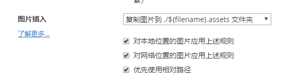
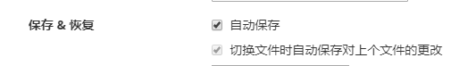
文章标题、标签、分类等配置
每篇md文档都需要配置frontmatter：
---
title: 低成本搭建博客🔥
date: 2023-1-1
categories:
- 前端
tags:
- vuepress
- blog
sticky: 1
---
2
3
4
5
6
7
8
9
10
11
---是必不可少的不可忽略，title 是标题，date 是日期，categories 是分类，tags 是标签，可以有多个分类和标签，sticky 可以让文章置顶，数字表示顺序，1 表示在最上面，2 其次。这里的代码格式一定是按照如上写法：变量后面要加冒号，冒号后面要有空格，不要加逗号。
文章路径
文章统一放到docs/article下，至于要不要再建目录分类，可以随意，第一步的配置可以让你的md文件里的图片都和md文件在同一个目录下
至此，我们完成了将要发布的博客md文件的配置。
# github配置
# 👉1. 创建仓库
我这里github上创建了两个仓库，blogscode用于存放源代码包括文章，blogs用于存放编译好的静态文件.
为什么要分两个仓库，其实不一定非得要分，因为在前端配置-配置博客布局中我使用了一个评论功能，需要填写clientId clientSecret,类似的参数涉及安全问题，而blogs要配置为公开的才能用于网站访问，故我创建代码仓库用于单独存放敏感信息，如果大家没有敏感信息可以都放到blogs仓库用不同分支管理即可，其中用于防止静态文件的分支固定为gh-pages，推送静态文件时要指定分支。
1.1 新建静态文件仓库
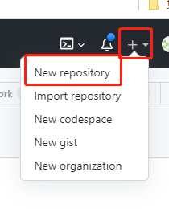
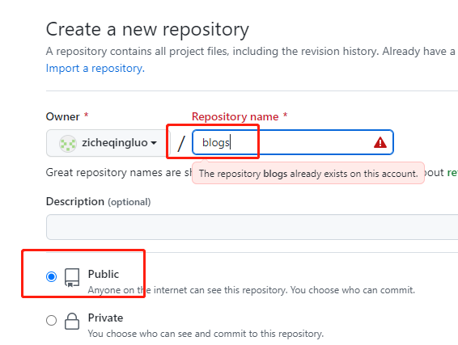
仓库名可自己指定，静态文件仓库要公开才可以配置pages
1.2 pages
点击settings-Pages
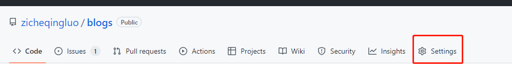

分支按图上配置，当然需要创建这个分支，可在CI/CD中看deploy脚本，保持推送的分支与其保持一致，自定义域名可选，如果不配置的话默认是用户名.github.io/仓库名,如zicheqingluo.github.io/blogs
1.3 代码仓库的创建同上，不过需要选择private，是否需要创建按需
1.4 ssh免密配置
mac和linux 直接在命令行执行ssh-keygen 命令，windows可通过git bash来执行，后续的git操作也会用git bash来运行deploy脚本
ssh-keygen -t rsa
#之后一路回车即可
cat ~/.ssh/id_rsa.pub
2
3
4
将内容复制到deploy keys即可，如图
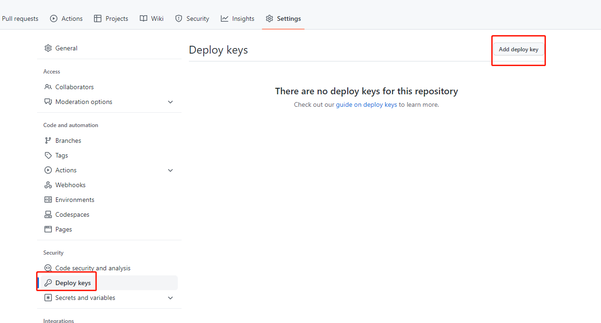 如果想全局配置可在右上角seeting-SSH and GPG keys中添加SSH keys
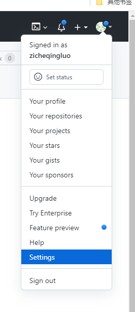
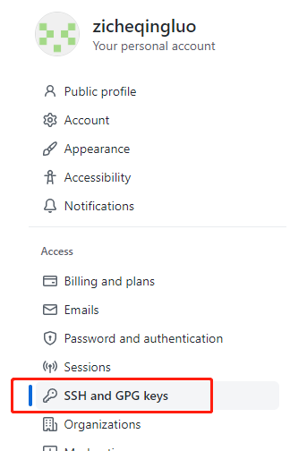
# 👉2. GitHub OAuth
评论功能需要创建github oauth app，会把评论创建在仓库的issue中，搭建好后，通过github登录，第一个发表评论的人需要在博客评论区点击创建issue，才可以发表评论，也可以找第三方免费的评论产品。
2.1 点击github-settings-Developer settings (opens new window)
2.2 点击 New OAuth App
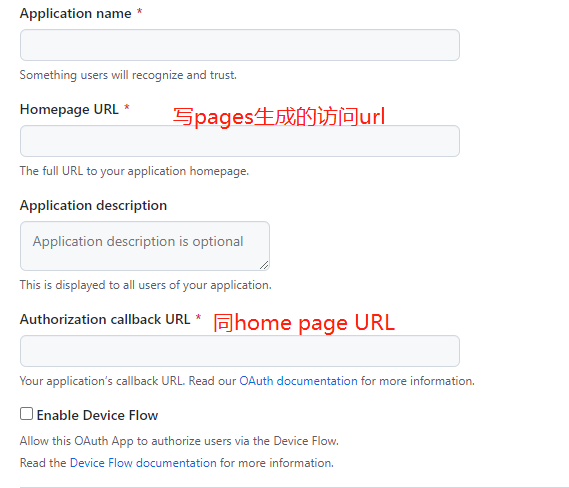
2.3 复制Client ID ,Client secrets 去博客搭建-配置博客布局里的vssueConfig配置即可。
# CI/CD
# 👉1. 脚本方式
在blogscode目录下，创建deploy.sh(windows下建议通过vscode编辑)
# 确保脚本抛出遇到的错误
set -e
distPath="./docs/.vuepress/dist"
#删除上上次编译
rm -rf ${distPath}_bak
#备份上一次编译
test -d ${distPath} && mv ${distPath} ${distPath}_bak
# 生成静态文件
npm run docs:build
# 复制markdown 图片到文章目录,因为用的是相对路径，编译后生产的图片链接是和文章一个路径，放到public下会因为url与实际路径不匹配404，这里手动给复制到编译好的目录下。
cd ./docs/article
assetsList=`find . -type d -name "*assets"`
for a in `echo $assetsList`
do
cp -r ${a} ../.vuepress/dist/article/${a}
done
# 进入生成的文件夹
cd ../.vuepress/dist
git init
git add -A
git commit -m 'deploy'
# 如果发布到 https://<USERNAME>.github.io/<REPO>
git push -f git@github.com:你的用户名/blogs.git master:gh-pages
cd -
2
3
4
5
6
7
8
9
10
11
12
13
14
15
16
17
18
19
20
21
22
23
24
25
26
27
28
29
30
31
32
33
本次操作是将编译好的静态文件，推送到了刚创建的blogs仓库。
代码文件可以推送到blogscode仓库
cd blogscode
git init
git add -A
git commit -m "update"
git push git@github.com:你的用户名/blogscode.git master
2
3
4
5
执行deploy.sh脚本时，windows用户建议使用git bash操作。
# 👉2. github actions
actions就是定义一组动作，推送到指定分支时触发，github会提供一个默认的编译机执行我们定义好的编译命令，编译完成后推送到我们指定的分支，比如我们把源代码推送到了master分支，则可设置只要master分支更新则触发CI的指令，成功后通过定义CD的指令部署到gh-pages分支，但这样会导致我们的代码直接暴露出去，一些appk appid等敏感信息就暴露出去了(因为用于站点访问的仓库必须要公开)，因为我没有深入研究能否从一个仓库拉代码编译好推送到另一个仓库，所以我没有采用。
以下是操作步骤：
2.1 选择actiojns
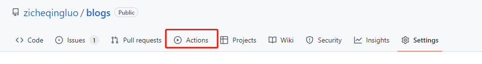
2.2 新建workflow
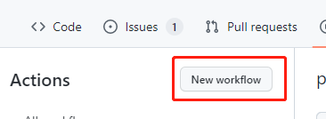
2.3 自定义
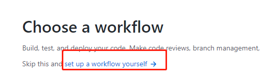
2.4 配置，
name: Github Pages
on:
#监听push操作
push:
branches:
- master # 这里只配置了master分支，所以只有推送master分支才会触发以下任务
jobs:
# 任务ID
build-and-deploy:
# 运行环境
runs-on: ubuntu-latest
# 步骤
steps:
# 官方action，将代码拉取到虚拟机
- name: Checkout ️
uses: actions/checkout@v3
- name: Install and Build # 安装依赖、打包，如果提前已打包好无需这一步
run:
npm install --no-fund
npm run docs:build
- name: Deploy # 部署
uses: JamesIves/github-pages-deploy-action@v4.3.3
with:
branch: gh-pages # 部署后提交到那个分支
folder: dist # 这里填打包好的目录名称
2
3
4
5
6
7
8
9
10
11
12
13
14
15
16
17
18
19
20
21
22
23
24
25
26
27
2.5 后续的修改，就可以在项目仓库的.github里进行修改
总结
这样配置没有用上deploy脚本中的一些配置，因为我在编译的时候就遇到了报错，没有再继续下去。
# 可选配置
# 👉自定义域名
- 修改github-pages
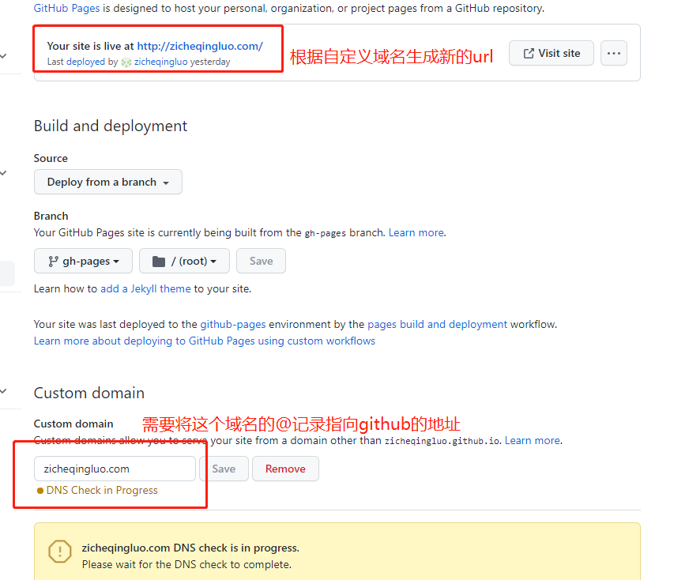
- 修改dns解析
如果使用一级域名访问如zicheqingluo.com ，需要将这个域名的@记录cname到用户名.github.io（如zicheqingluo.github.io），如果是www.zicheqingluo.com ，需要将www记录cname到zicheqingluo.github.io。
- 修改博客配置
因为上面生成的url是域名没有带任何path，所以base地址同样改为/，否则其他资源会404
vim docs/.vuepress/config.js
#修改base为：
base: "/",
2
3
此时，直接访问域名即可，https也可直接访问。
- CNAME
独立域名，如果不想每次更新代码后重新配置github-pages 的域名，可如下操作：
4.1 创建CNAME文件
进入docs目录，创建CNAME文件,填写你的一级域名，如:abc.com,当你访问www.abc.com时，会自动301到abc.com。同时，也省去了每次发布万就要在github pages填自定义域名的问题。
4.2 修改deploy.sh
#复制CNAME文件到目录
cp ../CNAME ../.vuepress/dist/
# 进入生成的文件夹 // 在脚本这个位置上面增加上面内容
2
3
4
# 👉PWA
pwa没有放到上面来说，主要是不一定所有的人有需求，在一个篇幅略微多一些。不了解PWA可以看下渐进式 Web 应用（PWA） (opens new window),简单来说就类似一个电脑的快捷方式，免去浏览器输入url的过程，对于手机就是一个app图标。PWA在不同平台的区别 (opens new window)
生成icon和manifest.json
可通过Favicon Generator (opens new window)或者imageGenerator (opens new window) 上传自己的图片生成各个设备不同大小的icon，并且还有配置文件，当然配置文件得改下。
# cd docs/.vuepress/public mkdir assets cd assets mkdir config icon1
2
3
4将生成的压缩吧解压，把icon放到icon目录下，将manifest.webmanifest放到config目录下，我是把manifest.webmanifest重命名为manifest.json，不改也可以。
{ "name": "子车轻罗的个人博客", "short_name": "app 图标上显示的名字，比如微信", "description": "描述", "icons": [ { "src": "/assets/icon/favicon-16x16.png", "sizes": "16x16", "type": "image/png" }, { "src": "/assets/icon/favicon-32x32.png", "sizes": "32x32", "type": "image/png" }, { "src": "/assets/icon/mstile-150x150.png", "sizes": "150x150", "type": "image/png", "purpose": "maskable" }, { "src": "/assets/icon/mstile-225x225.png", "sizes": "225x225", "type": "image/png", "purpose": "maskable" }, { "src": "/assets/icon/android-chrome-192x192.png", "sizes": "192x192", "type": "image/png" }, { "src": "/assets/icon/android-chrome-384x384.png", "sizes": "384x384", "type": "image/png", "purpose": "maskable" }, { "src": "/assets/icon/android-chrome-512x512.png", "sizes": "512x512", "type": "image/png", "purpose": "maskable" } ], "start_url": "/index.html", "scope": "/", "theme_color": "#ffffff", "background_color": "#ffffff", "display": "standalone" }1
2
3
4
5
6
7
8
9
10
11
12
13
14
15
16
17
18
19
20
21
22
23
24
25
26
27
28
29
30
31
32
33
34
35
36
37
38
39
40
41
42
43
44
45
46
47
48
49
50
51
52上面的内容都是按需调整，唯独"start_url" "scope"需要注意，如果是自定义域名写
/index.html。安装plugin
npm install @vuepress/pwa -D配置config.js
vim docs/.vuepress/config.js
module.exports = {
themConfig:{},
plugins:[
[
"@vuepress/pwa",
{
// skipWaiting: true,
serviceWorker: true,
updatePopup: true,
},
],
],
head: [
// PWA
["link", { rel: "icon", href: "/assets/icon/favicon.ico" }],
["link", { rel: "manifest", href: "/assets/config/manifest.json" }],
["meta", { name: "theme-color", content: "#ffffff" }],
["meta", { name: "apple-mobile-web-app-capable", content: "yes" }],
[
"meta",
{ name: "apple-mobile-web-app-status-bar-style", content: "black" },
],
[
"link",
{ rel: "apple-touch-icon", href: "/assets/icon/apple-touch-icon.png" },
],
[
"link",
{
rel: "mask-icon",
href: "/assets/icon/icons/safari-pinned-tab.svg",
color: "#3eaf7c",
},
],
[
"meta",
{
name: "msapplication-TileImage",
content: "/assets/icon/mstile-150x150.png",
},
],
["meta", { name: "msapplication-TileColor", content: "#ffffff" }],
],
}
2
3
4
5
6
7
8
9
10
11
12
13
14
15
16
17
18
19
20
21
22
23
24
25
26
27
28
29
30
31
32
33
34
35
36
37
38
39
40
41
42
43
44
验证
chrome在应用商店中安装lighthouse插件，选择analyze page load即可检查pwa是否成功
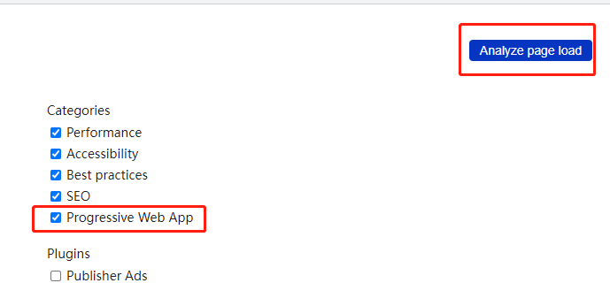
体验pwa
- windows chrome会在地址栏有一个安装按钮
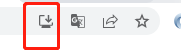
安卓浏览器打开博客时会提示是否安装到桌面
ios safari浏览器打开点击分享按钮，选择添加到主屏幕
# 👉SEO
站长管理后台
注册并按照要求配置
优化URL
frontmatter 配置permanentlink
比如:
我有个文件名是
00.CSS教程和技巧收藏.md的markdown 文件，当设置 permalink: /css-tips.html 时，发表后对应的url就会是 https://dbdgs.cn/css-tips.html 。
另外, url中尽量不要出现#、
?等特殊字符，尽量不要出现大写字母。安装插件
meta优化
npm install -D vuepress-plugin-autometa添加sitemap
npm install vuepress-plugin-sitemap增加feed
npm install -D vuepress-plugin-feedmarkdown文件的frontmatter加上以下内容：
feed: enable: true1
2自动推送到百度(看起来过期了)
npm install -D vuepress-plugin-baidu-autopush
vim docs/.vuepress/config.jsconst domain = "https://改为你的域名"; module.exports = { themConfig:{}, plugins:[ [ "autometa", { site: { name: "zicheqingluo", twitter: "yanglr", }, canonical_base: domain, }, ], ['sitemap', { hostname: domain, // 排除无实际内容的页面 exclude: ["/404.html"] } ], [ 'vuepress-plugin-baidu-autopush' ], ], head: [], markdown: { lineNumbers: true, externalLinks: { target: "_blank", rel: "nofollow noopener noreferrer" }, }, }1
2
3
4
5
6
7
8
9
10
11
12
13
14
15
16
17
18
19
20
21
22
23
24
25
26
27
28
29
30增加robots.txt
vim docs/.vuepress/public/robots.txt Sitemap: https://你的域名/sitemap.xml User-agent: *1
2
3
4SEO评分
同PWA第四步
登录百度站点平台 (opens new window) 配置收录(其他平台操作步骤相同)，直接填写sitemap地址即可，如图：
sitemap地址为：域名/sitemap.xml
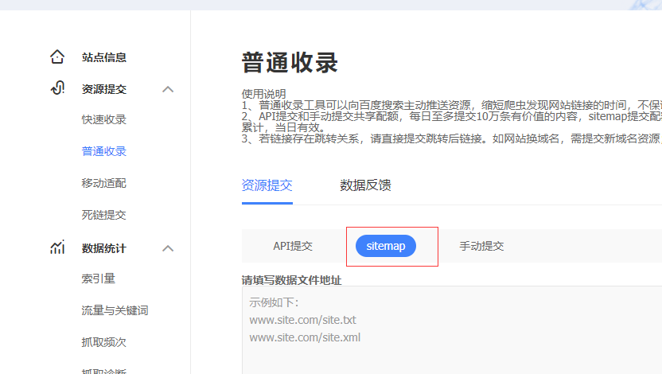
登录百度统计 (opens new window) 开启单页面应用数据统计
# 其他
# 👉排障技巧
- 尽量操作一步运行一次，这样方便回溯是哪些变更导致的，虽然我配置是完整的，但可以一点点复制进去。
- 报插件错误的，无脑先rm -rf node_modules rm,再npm i装一遍
- 插件没更新，就不要用热编译，重新在npm run docs:dev
# 👉说明
markdown一级标签不会生成侧边栏，右侧边栏是从二级标签开始展示的，到三级标签就结束了，4、5、6级的标题渲染出来很小，看起来没有正文大所以不建议使用，即使使用加粗都比4级标题明显。
# 文章中引入样式和脚本
有时，你可以只想在当前页面应用一些 JavaScript 或者 CSS，在这种情况下，你可以直接在 Markdown 文件中使用原生的 或者 标签，它们将会从编译后的 HTML 文件中提取出来，并作为生成的 Vue 单文件组件的和标签。
# 免费的服务托管
除了github pages，https://vercel.com/也是一个免费的托管平台，有兴趣的可以试试。